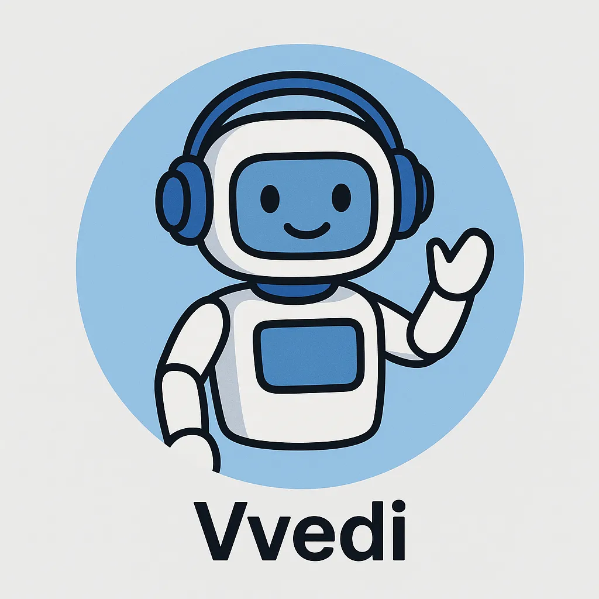

Vvedi
ИИ, который пишет посты за вас — красиво, быстро и умно.
Добавить бота в Telegram
Что делает бот
Пишет посты на любую тему
Сохраняет стиль вашего канала
Генерирует длинные и короткие тексты
Подбирает идеи, когда нет вдохновения
Работает как “виртуальный админ”
Добавить бота
Кому подходит
Владельцам Telegram-каналов
Креаторам и авторам
Маркетологам
Новостным / мемным / тематическим каналам
Тем, кто хочет активный канал без рутины
Получить помощь бота
Функции
Генерация готовых постов
Контроль стиля канала
Анализ последних сообщений
Подготовка длинных текстов
Идеи и сценарии для контента
Запустить Vvedi